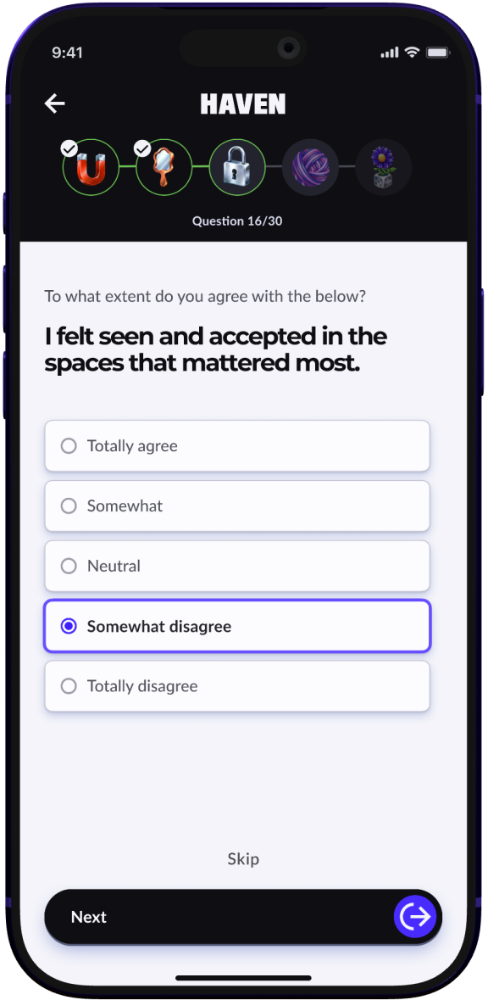
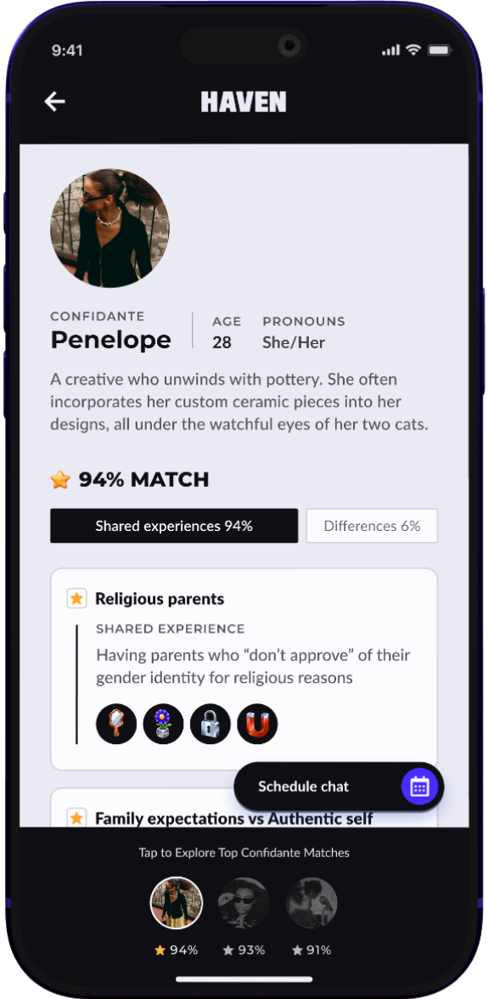
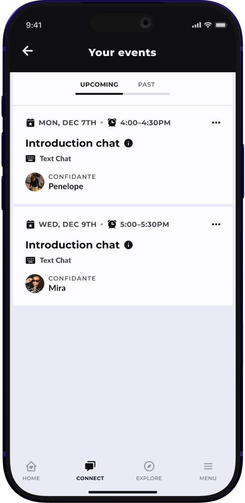
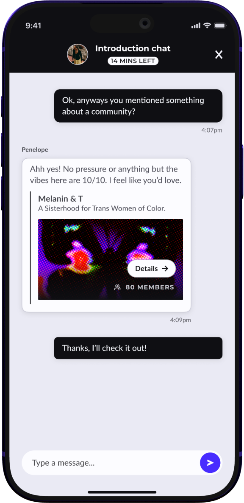
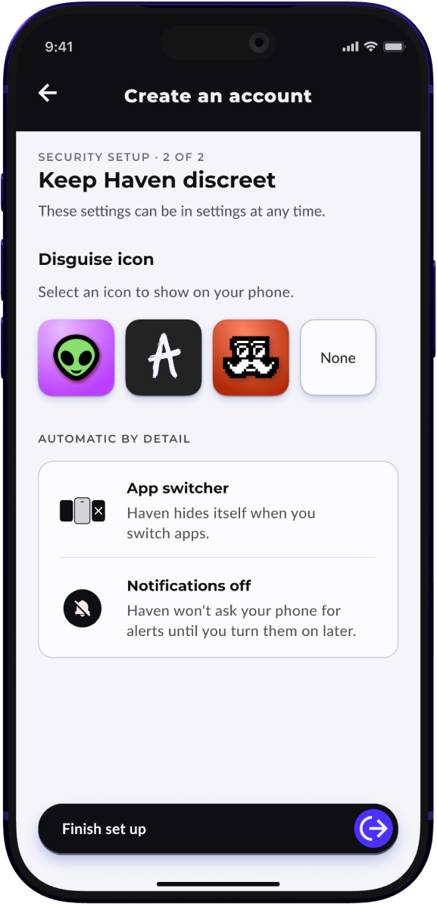

Understood
A short identity quiz matches a teen with Confidantes who share the experiences that shape them.
Where things stand
To be understood and to be safe.

A short identity quiz matches a teen with Confidantes who share the experiences that shape them.

Each Confidante’s profile shows those shared experiences first.

Intro chats are text only, booked for a time the teen can be alone.

The intro chat comes before choosing, so the teen can see if it feels right.

Haven can hide behind a different icon on the teen’s phone.
Identity was the first phase.
Community is next.